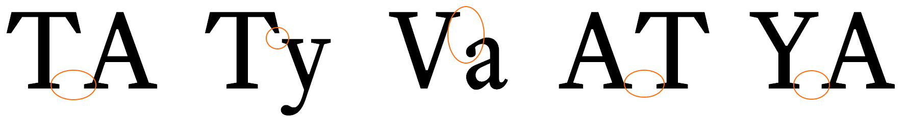

{kind=link}
{kind=link}
{kind=link}
{kind=link}
{kind=link}

7
The normalise.css file is used to standardise how browsers display the HTML elements, it makes sure that properties such as margins, line-height, font-size &c. are all defined and have consistent values on all web browsers.
This is a very good starting point, it might not be exactly what I want for this website, but at least I know there is a common baseline underlying everything.Yay Gallagher and Neal.
The next thing is to define the basic properties for the website, for this I will use the asterisk (*), <html> and <body> selectors.
In Brackets, open style.css and add the code listed in Code 7.2 (or download it by clicking the icon at the bottom of the code fragment).
/* PRACTICALSERIES (c) 2016
*****************************************************************
Title : WEBSITE MAIN STYLE SHEET STYLE.CSS
*****************************************************************
PRACTICALSERIES: Practical Series of Publications
Website Development for Online Publications
*****************************************************************
-----------------------------------------------------------------
COLOURS IN USE
Colour Usage Hex Code
--------------------+-----------------------------------+--------
Page | Page colour outside 1276 boundary | #fbfaf6
Page edge | Border colour to page edge | #ededed
Background | Overall background colour (white) | #fff
Main text | main body text (v. dk gy) | #404030
sidebar text | Sidebar sans serif text (lt gy) | #686868
sidebar border | when collapsed (gy) | #ccc
sidebar bkground | when collapsed (lt gy) | #f8f8f8
Table border | Outline for all tables | #ccc
table background | Incidental, code, formula (lt gy) | #fbfbfb
Navigation base | Nav (link/visited) | #ccc
Navigation hover | Nav (active/hover) | #686868
Navigation bkgrd | Nav background (link/visited) | #fff
Navigation bkgrd | Nav background (active/hover) | #c8c8c8
TOC list | Contents list of entries (blue) | #4C6C9C
Footer background | Footer area background (cream) | #fbfaf6
Footer navigation | Footer nav & spacer text (blue) | #4c6c9c
Footer nav h-light | Footer nav highlights (lt blue) | #5b7daf
Button background | Button light orange | #e67e22
Button hover | Button dark orange (hover) | #de7519
Text (red) | Red text highlight | #c0504d
Untested link | Highlights untested links | #ff0000
-------------------------------------------------------------- */
/* **************************************************************
BASE PAGE SETUP
*********************************************************** */
* {
margin: 0;
padding: 0;
box-sizing: border-box;
position: relative;
}
html {
background-color: #fbfaf6; /* cream page bkgrd */
font-size: 24px;
color: #404030;
text-rendering: optimizeLegibility;
}
body {
max-width: 1276px;
margin: 0 auto;
background-color: #fff; /* make body area white */
border-left: 1px solid #ededed;
border-right: 1px solid #ededed;
}
| Code 7.2 style.css global settings |
I’ve started with comments (these are not as extensive at the comments in the published website, this again is for the reasons stated in the previous section: it’s an attempt to try and keep each line of code on one line in the code fragments and to keep the code fragments a reasonable length).
The comments contain a section called “Colours in use” this, as you will find out, is a very useful section. I’ve listed all the colour values I use in the website with a brief description of where I’ve used them.
I’ve said before that not being able to define constants, or at least assign mnemonic references to things is a problem for CSS (§ 4.3), it means that every time a colour value is used, it has to be keyed in manually; I actually have to remember that it is #4c6c9c, and can’t just type a mnemonic such as toc-text-col. It’s a pain in the arse; I ended up searching the stylesheet just to find the colour I wanted. In the end I came up with the colours in use table, at the very least I knew where to find the colour values.
I discussed the asterisk selector and setting default properties for the box model I’m using in § 6.2.1. This is pretty much the same:
* {
margin: 0;
padding: 0;
box-sizing: border-box;
position: relative;
}
It sets the margin and padding for absolutely every element to zero†1. I will then adjust each element as I need to later as we add more styles.
I’ve set the box-sizing for all box elements to border-box. This is the more intuitive way of sizing box elements (again, see § 6.2.1).
Finally, I’ve defined the positioning of all HTML elements to be relative. I’ve done this so that I can use absolute positioning when I need to. It ensures the golden rule for positioning:
|
For absolute positioning to work, the parent element |
|
I cover this fully in § 6.7. Basically, to position elements absolutely, their parent element must be set to relative positioning. By default HTML elements are set to static positioning; by adding the position: relative declaration to the asterisk selector, I’ve changed this default to relative positioning, this lets me add absolute positioning wherever I want.
| †1 | This may make the changing of the h1 settings in normilise.css (§ 7.2.1) pointless, but there we are — better safe than sorry. | ||
These are a bit interlinked so I’ll explain them together (with pictures to make things easier). If all I had in the html and body sections was this:
html {
background-color: #fbfaf6; /* cream page bkgrd */
}
body {
}
i.e. just a background colour then I would get this:
So that’s pretty much as expected, it gives a pale cream background and nothing else.
Now let’s add a bit of body styling:
html {
background-color: #fbfaf6; /* cream page bkgrd */
}
body {
max-width: 1276px;
height: 1000px;
margin: 0 auto;
background-color: #fff; /* make body area white */
}
Now we get:
It’s made the middle bit white; what’s more that middle bit is exactly 1276 px wide and is positioned in the centre of the browser window.
It works like this, the body declaration max-width: 1276px does exactly what is says, it restricts the body area to a maximum width of 1276 px; if the browser window is wider than this, the body area will be limited to a maximum width of 1276 px.
I’ve included the height declaration so that you can see the body area, it will be 1000 px high (remember the <body> area in the HTML is empty, it has no content and since we have defined the margins and padding of everything to be zero, it would have no visible height. This would change if we started adding content to the body in the html, but at the minute it’s empty — hence the height declaration)
The background colour is set to white (#fff) so we can see a white panel where the body area is, this panel is in the middle of the browser window because of the margin: 0 auto declaration. This sets the top and bottom margins to zero and the left and right margins to auto, this forces the body area into the centre of the screen. The auto value when applied to both left and right margins makes them equal in width, putting the body area in the middle (it’s a very commonly used CSS trick).
The next thing is the border properties in the body selector. Add them in:
html {
background-color: #fbfaf6; /* cream page bkgrd */
}
body {
max-width: 1276px;
height: 1000px;
margin: 0 auto;
background-color: #fff; /* make body area white */
border-left: 1px solid #ededed;
border-right: 1px solid #ededed;
}
All this does is put a grey border down each side of the body area:
That’s it for the body selector, but take out the height declaration, we’ll let the body area set its own height based on its content.
That just leaves some styling points in the html selector, add the following three lines:
html {
background-color: #fbfaf6; /* cream page bkgrd */
font-size: 24px;
color: #404030;
text-rendering: optimizeLegibility;
}
Taking these in order:
The font-size: 24px sets the default text size for the website; this is set at 24 px and I arrived at this size based on the long discussion in § 3.3.3 and its preceding sections.
This is the default point size that the rem unit is based upon (§ 3.2.6 & § 5.6.2). I.e. text that is sized in rems will use 24 px as its base value; for example text anywhere on the page that is set to 2 rems will be 48 pixels high; similarly text at 0.5 rem will be 12 pixels high.
The text colour is set to a shade that is just off grey, it’s set with the color: #404030 property, it is this colour:
When I was researching websites, one thing I noticed was that very few of the good looking ones used pure black for their text colour; they used various versions of dark grey — this got me thinking; when I write by hand I use a blue-black ink (yes, I write with a fountain pen†2— not a quill, I hasten to add — I’m not that old); even black biro is actually a very dark purple.
So maybe it makes sense not to use pure black — from what I’ve read, the eye prefers a dark grey to black and so I’ve used a dark grey just slightly shifted away from the blue; it’s about 77% black. I like it, its hex value is #404030.
Finally: text-rendering: optimizeLegibility — yeah, I don’t think that’s how you spell optimise either. Strictly speaking this isn’t part of the CSS standard, but it seems to be widely supported. Think of it as an instruction to the browser’s rendering engine, telling it how to render a font, the other options are optimizeSpeed, geometricPrecision and auto. The reason I’ve chosen optimizeLegibility is that this supports font kerning.
Font kerning is where certain pairs of letters are adjusted to give better spacing and to make them fit together properly, like this:
|  | Kerning off | |
| Kerning on | ||
Mr Butterick gives a full explanation of how kerning works on his practical typography website.
I want the fonts on the website to use kerning and setting text-rendering: optimizeLegibility turns this feature on (albeit at the expense of rendering speed).
Ok, that’s it for the preliminary stuff.
| †2 | My old Dad used to say “Only ever sign your name with a fountain pen”. He’s dead now, but I like to think he would be please with me passing on his pearls of wisdom. | ||